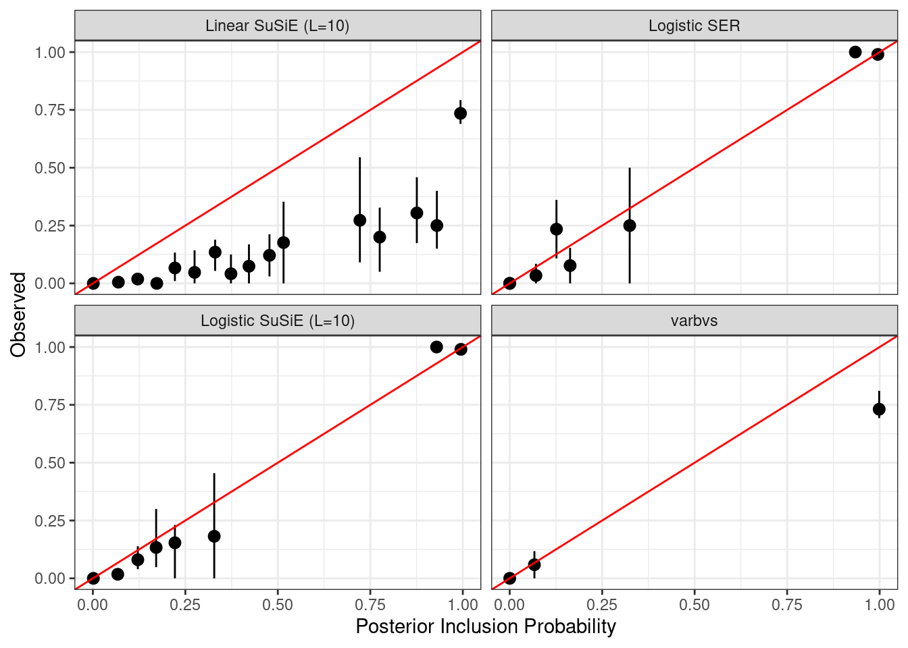
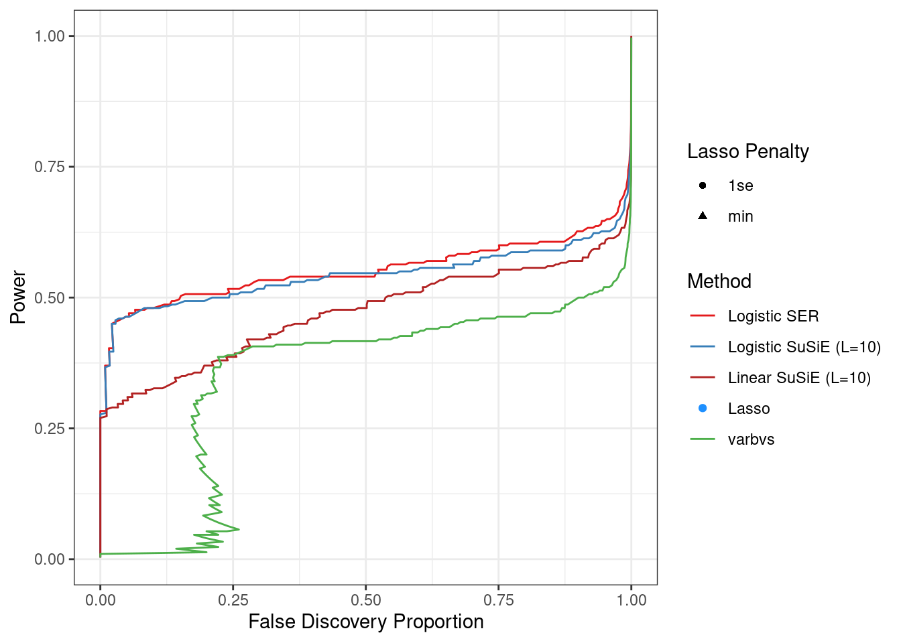
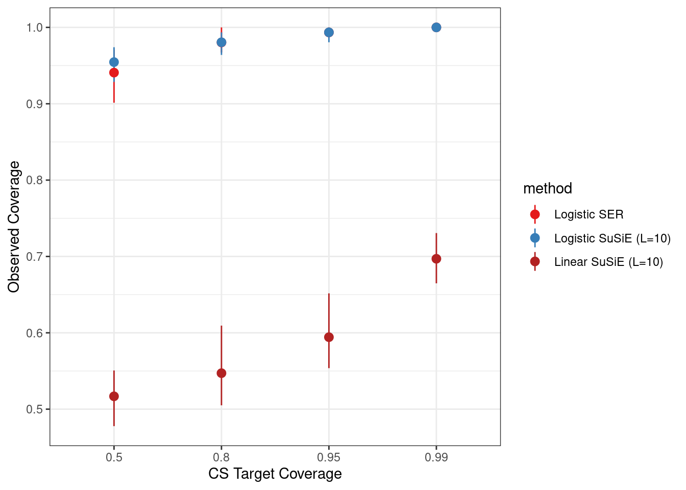
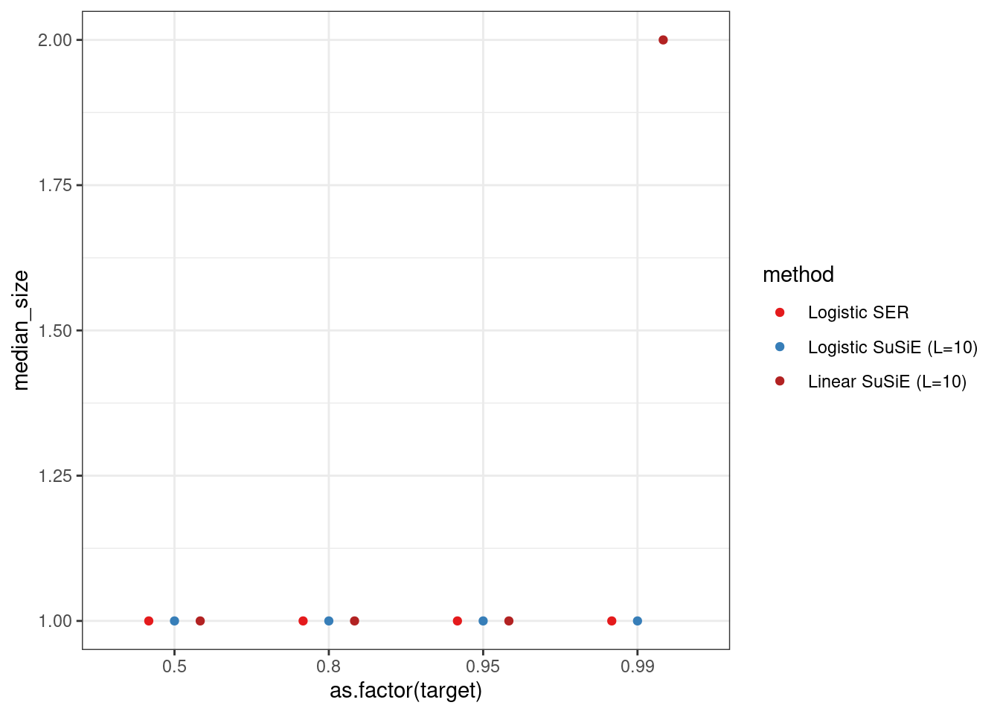

#project_dir <- snakemake@config$project_dir
project_dir <- '/project2/mstephens/ktayeb/logistic-susie-snakemake'
knitr::opts_knit$set(root.dir = project_dir)Gene set enrichment, single gene set
library(dplyr)
Attaching package: 'dplyr'The following objects are masked from 'package:stats':
filter, lagThe following objects are masked from 'package:base':
intersect, setdiff, setequal, unionload_sim <- function(sim_id){
sim <- readRDS(glue::glue('results/gsea/sim/sims/{sim_id}/sim.rds'))
l10 <- readRDS(glue::glue('results/gsea/sim/sims/{sim_id}/logistic_susie_l10_fit.rds'))
l1 <- readRDS(glue::glue('results/gsea/sim/sims/{sim_id}/logistic_susie_l1_fit.rds'))
lasso <- list(readRDS(glue::glue('results/gsea/sim/sims/{sim_id}/lasso_fit.rds')))
varbvs <- list(readRDS(glue::glue('results/gsea/sim/sims/{sim_id}/varbvs_fit.rds')))
l10lin <- list(readRDS(glue::glue('results/gsea/sim/sims/{sim_id}/susie_l10_fit.rds')))
return(list(sim=sim, l10=l10, l1=l1, lasso=lasso, varbvs=varbvs, l10lin=l10lin))
}
sim_id = "101c9"
full_data <- readr::read_tsv('config/gsea_sim/single_gs.tsv') %>%
dplyr::rowwise() %>%
dplyr::mutate(data = list(load_sim(sim_id))) %>%
dplyr::ungroup()Rows: 375 Columns: 8── Column specification ────────────────────────────────────────────────────────
Delimiter: "\t"
chr (3): X_id, hash, sim_id
dbl (5): b0, b, min_size, max_size, rep
ℹ Use `spec()` to retrieve the full column specification for this data.
ℹ Specify the column types or set `show_col_types = FALSE` to quiet this message.library(ggplot2)
library(tidyr)
source('workflow/scripts/plotting/plot_functions.R')
compute_pip <- function(alpha){
purrr::map_dbl(1:ncol(alpha), ~(1 - prod(1-alpha[,.x])))
}
compute_pip_data <- function(b, data){
p <- ncol(data$l1$alpha)
if(b != 0){
causal <- as.integer(1:p %in% data$sim$idx)
} else{
causal <- rep(0, p)
}
pips = list(
l10 = compute_pip(data$l10$alpha),
l1 = compute_pip(data$l1$alpha),
vbs = unname(data$varbvs[[1]]$pip),
l10lin = compute_pip(data$l10lin[[1]]$alpha)
)
return(list(causal=causal, pip=pips))
}
pip_data <- full_data %>%
dplyr::rowwise() %>%
dplyr::mutate(pip_data = list(compute_pip_data(b, data))) %>%
dplyr::ungroup() %>%
dplyr::select(-data) %>%
tidyr::unnest_wider(pip_data) %>%
tidyr::unnest_longer(pip, indices_to = 'method')
# Define a named vector of colors corresponding to each method
method_labels <- c(
"l1" = "Logistic SER",
"l10" = "Logistic SuSiE (L=10)",
"vbs" = "varbvs",
"l10lin" = "Linear SuSiE (L=10)",
"lasso" = "Lasso"
# Add other methods and their corresponding colors as needed
)
# Define a named vector of human-readable labels for methods
method_colors <- c(
"l1" = "#E41A1C",
"l10" = "#377EB8",
"vbs" = "#4DAF4A",
"l10lin" = "firebrick",
"lasso" = "dodgerblue"
# Add other methods and their corresponding human-readable labels as needed
)Logistic SuSiE offers better calibration in simulations scenarios representative of gene set analysis.
pip_data %>%
mutate(method_readable = recode(method, !!!method_labels)) %>%
make_pip_calibration_plot() +
facet_wrap(vars(method_readable)) +
labs(x = 'Posterior Inclusion Probability', y = 'Observed') +
scale_color_manual(values = method_colors) +
xlim(0, 1) + ylim(0, 1)Warning: Removed 11 rows containing non-finite outside the scale range
(`stat_pip_cal()`).Warning: No shared levels found between `names(values)` of the manual scale and the
data's colour values.
Logitic SuSiE PIPs offer a better ordering of gene sets compared to linear SuSiE (a linear method designed to handle correlated covariates), and varvbs (logistic model, mode seeking variational approximation). We also compare to logistic lasso, as a representative of sparse peanlized regression methods. These methods return point estimates, and have a penalty parameter that is tuned by cross validation. We find that two choices of the penaly parameter, that minimize CV loss, and a more stringent penalty that does not sacrific too much in terms of CV loss. Neither offers favorable tradeoff. We note that in these simulations 1se often included only one variable, so that it can be also read as “top effect”.
# takes an unnested tbl of pips (1 row, 1 pip) and produces the fdr plot
make_fdp_plot2 <- function(pips, ...){
pips %>%
unnest_longer(c(pip, causal)) %>%
ggplot(aes(pip, causal, color=method)) +
stat_fdp_power(geom='path', ...)
}
get_lasso_data <- function(data){
sim <- data$sim
lasso_fit <- data$lasso[[1]]
incl <- which(coef(lasso_fit, lasso_fit$lambda.1se)[,1][-1] !=0)
size <- length(incl)
covered <- as.integer(sim$idx %in% incl)
lambda1se = list(incl=incl, size=size, covered=covered)
incl <- which(coef(lasso_fit, lasso_fit$lambda.min)[,1][-1] !=0)
size <- length(incl)
covered <- sum(sim$idx %in% incl)
lambdamin = list(incl=incl, size=size, covered=covered)
return(list(`1se` = lambda1se, `min` = lambdamin))
}
lasso_data <- full_data %>%
dplyr::rowwise() %>%
dplyr::mutate(lasso_data = list(get_lasso_data(data))) %>%
dplyr::select(-data) %>%
tidyr::unnest_longer(lasso_data, indices_to = 'level') %>%
tidyr::unnest_wider(lasso_data) %>%
dplyr::group_by(level) %>%
summarize(
n = n(),
tp = sum(covered),
fp = sum(size) - tp,
power = tp / n,
fdp = fp / (tp + fp),
method='lasso'
)
pip_data %>%
make_fdp_plot2() +
geom_point(data=lasso_data, aes(x=fdp, y=power, color = method, shape=level, size=2)) +
labs(x='False Discovery Proportion', y='Power') +
scale_color_manual(values = method_colors, labels = method_labels) +
theme_bw() +
labs(color = 'Method', shape = 'Lasso Penalty') +
guides(size = "none")Warning: Removed 2 rows containing missing values or values outside the scale range
(`geom_point()`).
We assess the coverage of logistic SuSiE credible sets at various coverage levels. We retain components where \(\log \text{BF}_{\text{SER}} > 1\). Withouth this threshold many of the components are non-informative. Furthermore in simulations where we detect the effect in one component, the other components will be depleted for the variables selected. We find that logistic SuSiE credible sets obtain target coverage, and are often conservative. In contrast the linear SuSiE credible sets fail to obtain coverage at any level. For reference we also report coverage of the lasso solutions (did we estimate a non-zero effect for the enriched gene set?). Note that while 1se is a subset of min, we can only assess coverage where we report results. For many simulation 1se returns no non-zero effects, while min returns a set of effects which may not contain the correct variable. Thus we see a loss of coverage by diluting our discoveries with sets containing no causal variable.
# compute cs at a target coverage, no frills
compute_cs <- function(alpha, coverage){
sorted_indices <- order(alpha, decreasing = TRUE) # sort indices
cumsum_alpha <- cumsum(alpha[sorted_indices]) # get cs size at each cutoff
size <- which(cumsum_alpha >= coverage)[1] # take smallest cs achieving target coverage
cs <- sorted_indices[1:size]
return(cs)
}
compute_cs2 <- function(sim, alpha, coverage){
cs = purrr::map(1:nrow(alpha), ~compute_cs(alpha[.x,], coverage))
size = purrr::map_int(cs, length)
covered = purrr::map_int(cs, ~(as.integer(sim$idx %in% .x)))
return(list(cs=cs, size=size, covered=covered, target=coverage))
}
compute_cs_data <- function(data, coverage=0.95){
return(list(
l10 = c(compute_cs2(data$sim, data$l10$alpha, coverage), list(lbf = data$l10$lbf_ser)),
l1 = c(compute_cs2(data$sim, data$l1$alpha, coverage), list(lbf = data$l1$lbf_ser)),
l10lin = c(compute_cs2(data$sim, data$l10lin[[1]]$alpha, coverage), list(lbf = data$l10lin[[1]]$lbf))
))
}
make_cs_data <- function(coverage){
cs_data <- full_data %>%
dplyr::rowwise() %>%
dplyr::mutate(cs_data = list(compute_cs_data(data, coverage))) %>%
dplyr::select(-data) %>%
tidyr::unnest_longer(cs_data, indices_to='method') %>%
tidyr::unnest_wider(cs_data) %>%
tidyr::unnest_longer(c(cs, size, lbf, covered, target))
return(cs_data)
}
cs_data <- purrr::map_dfr(
c(0.5, 0.8, 0.95, 0.99),
make_cs_data)
lasso_coverage <- full_data %>%
dplyr::rowwise() %>%
dplyr::mutate(lasso_data = list(get_lasso_data(data))) %>%
dplyr::select(-data) %>%
tidyr::unnest_longer(lasso_data, indices_to = 'level') %>%
tidyr::unnest_wider(lasso_data) %>%
dplyr::group_by(level) %>%
dplyr::filter(size > 0, b != 0) %>%
dplyr::rename(target = level) %>%
dplyr::mutate(method='lasso')
cs_data %>%
dplyr::filter(lbf > 1, b != 0) %>%
select(c(target, covered, method)) %>%
dplyr::mutate(target = as.factor(target)) %>%
dplyr::bind_rows(lasso_coverage) %>%
ggplot(aes(x=as.factor(target), y=as.numeric(covered), color=method)) +
stat_bs_mean(position=position_dodge(0.)) +
theme_bw() +
labs(x = 'CS Target Coverage', y='Observed Coverage') +
scale_color_manual(values = method_colors, labels = method_labels)
[1] "x" "y" "colour" "PANEL" "group"
[1] "x" "y" "colour" "PANEL" "group"
[1] "x" "y" "colour" "PANEL" "group"
[1] "x" "y" "colour" "PANEL" "group"
[1] "x" "y" "colour" "PANEL" "group"
[1] "x" "y" "colour" "PANEL" "group"
[1] "x" "y" "colour" "PANEL" "group"
[1] "x" "y" "colour" "PANEL" "group"
[1] "x" "y" "colour" "PANEL" "group"
[1] "x" "y" "colour" "PANEL" "group"
[1] "x" "y" "colour" "PANEL" "group"
[1] "x" "y" "colour" "PANEL" "group" We can look at the median credible set size. We also report the number of variables reported by lasso when the penalty parameter is tuned by cross validation. We see that the median CS size is smaller. We restrict our attention to credible sets where the logBF for the SER > 1. In linear SuSiE there are many large credible sets. In logistic SuSiE, we find that when one component picks up the correct variable, the other credible sets are depleted for the causal variable, causing under coverage in these other credible sets. Overall we find that logistic SuSiE yields credible sets that obtain nominal coverage while logistic SuSiE does not. Across all these simulations the credible sets are small, with a median size of \(1\). Yet we see much better performance than from varvbs. The penalized regression methods yield sparse results but have worse performance. The penalty parameter is tuned by cross validation.
cs_data %>%
filter(lbf > 1, b != 0) %>%
dplyr::mutate(target = as.factor(target)) %>%
group_by(method, target) %>%
dplyr::bind_rows(lasso_coverage) %>%
dplyr::summarize(median_size = median(size)) %>%
ggplot(aes(x=as.factor(target), y=median_size, color=method)) +
geom_point(position = position_dodge(width = 0.5)) +
theme_bw() +
#facet_wrap(vars(max_size)) +
scale_color_manual(values = method_colors, labels = method_labels)`summarise()` has grouped output by 'method'. You can override using the
`.groups` argument.